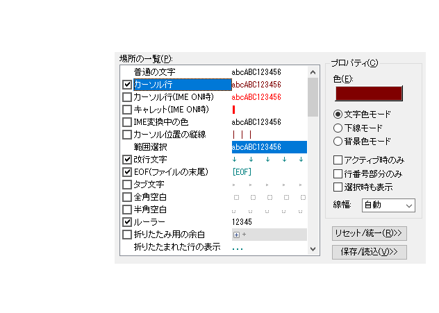
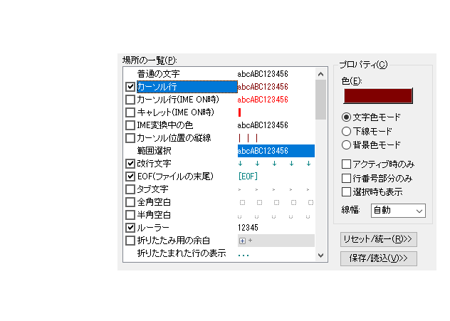

- カーソルのある行を強調するために、下線を引きたいのですが。

「その他→ファイルタイプ別の設定」から「デザイン−場所の一覧−カーソル行」で変更することで可能です。
[手順]
カーソル行を選択すると、プロパティ枠内に、設定が表示されるので、 "下線モード"を選択して下さい。
「その他→ファイルタイプ別の設定」から「デザイン−場所の一覧−カーソル行」で変更することで可能です。
[手順]
カーソル行を選択すると、プロパティ枠内に、設定が表示されるので、 "下線モード"を選択して下さい。
